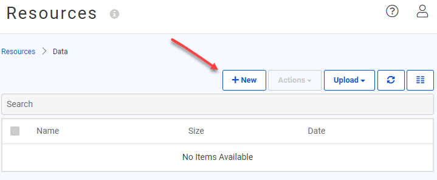
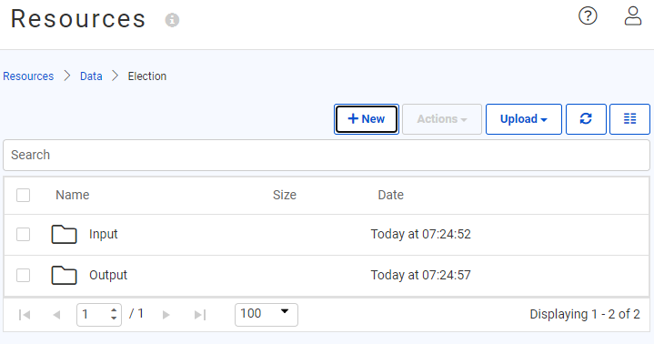
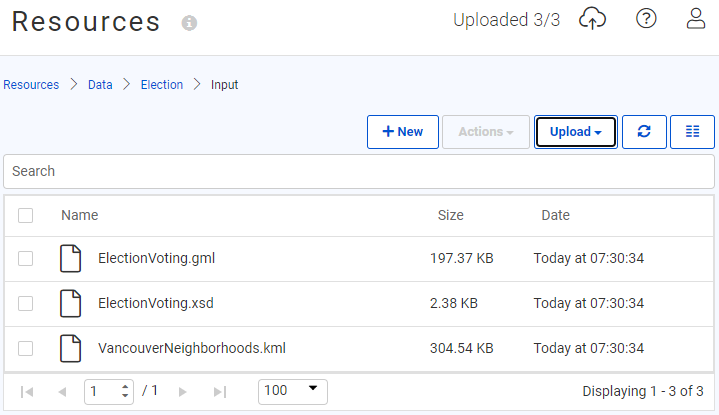
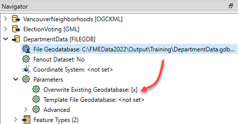
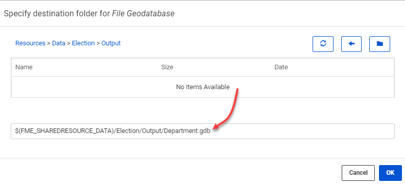

After completing this lesson, you’ll be able to:
You have already created a workspace to translate data and published it to FME Server, both with data and using data uploaded temporarily.
However, such data management tools are not particularly suited to a long-term project, so the task here is to upgrade workspaces to use datasets stored in a Resources folder. There we can store source data and write destination data.
Log in to the FME Server (2022.0 or later) web interface using an administrator account (admin/FMElearnings on Safe Software training machines). Click Files & Connections > Resources on the menu bar to navigate to the resources management pages.
In most cases, data should be stored under the Data folder, so click on Data in the Resources dialog to open that folder. To avoid mixing datasets, our data should go into its own subfolder. So click on the +New button and create a folder called Election:

Next, click on the Election folder, and then create new subfolders called Input and Output:

Browse to the Input folder, click the Upload button, and select Files. Download the files below (right-click > Save link as...) and then upload them as the source datasets for the current translation:

So we now have both source datasets and a folder to write the output data to.
Until now, our workspaces have only had a NULL (dummy) writer. Now we know about Resources, we can add a proper writer and point the output dataset to the Resources Output folder.
So, open the starting workspace template in FME Workbench (2022.0 or later) and then select Writers > Add Writer on the menu bar and set up a new writer with the following parameters:
| Writer Format | Esri Geodatabase (File Geodb Open API) |
| Writer Dataset | C:\FMEData\Output\Training\DepartmentData.gdb |
| Feature Class or Table Definition | None (Advanced) |
We do not add feature types yet because we can move the existing ones from the NULL writer. So when you click OK, the workspace will look no different, but there will be a new writer in the Navigator window:
Inspect the parameters dialog for each writer feature type in turn. For each type, move it from the NULL writer to the FILE GDB writer, like so:

This will expose several extra parameters. The key one to set is Geometry. Set the Neighborhoods feature type Geometry parameter to geodb_polygon:

Set the VotingPlaces feature type Geometry parameter to geodb_point.
Now the two feature types belong to the Geodatabase writer, and the NULL writer can be deleted from the Navigator window if you wish.
One last thing to change: locate the Geodatabase writer in the Navigator window and expand its list of parameters. Find the parameter labeled Overwrite Existing Geodatabase and enable it.

This ensures we aren't continually adding data to the same dataset if we run the workspace more than once.
Test run the workspace in FME Workbench. Inspect the output in Visual Preview. If it is not already selected, click Toggle Display Control on the left-hand side of the visual preview page. You should find the output is a Geodatabase containing seven tables (the Neighborhoods table and a separate table for each set of voting places).

Publish the workspace to FME Server (2022.0 or later). Do not upload data unless you have not completed the previous exercises. Register the workspace against the Job Submitter service.
Return to the FME Server web interface. Locate the workspace under the Run Workspace dialog.

For each file, click the Browse Resources button, browse to the Input subfolder in Resources, and select/set the file location. Since the Geodatabase does not exist yet, For the Geodatabase output location, you'll need to type the file name manually:
$(FME_SHAREDRESOURCE_DATA)/Election/Output/DepartmentData.gdb

Now when the workspace is run, a completed Geodatabase file should appear in the folder Resources\Data\Election\Output:

Although the workspace ran correctly and used the data in the resources folder, that's only because we selected that data at runtime. It is not a permanent feature of the workspace.
It would be much better if we designed the workspace to look into the resources folders automatically.
So, return to the workspace in FME Workbench.
If we set the workspace to read from the resources folders, we don't want to give users the chance to change that. So in the Navigator window, locate the three parameters for source and destination datasets and delete them:

Now, locate the source and destination dataset parameters for the two readers and one writer. Double-click each and change them to:
| KML Reader | $(FME_SHAREDRESOURCE_DATA)\Election\Input\VancouverNeighborhoods.kml |
| GML Reader | $(FME_SHAREDRESOURCE_DATA)\Election\Input\ElectionVoting.gml |
| Geodatabase Writer | $(FME_SHAREDRESOURCE_DATA)\Election\Output\DepartmentData.gdb |

Save the workspace and publish it back to FME Server.
Now run the workspace on FME Server. This time you will not be prompted with a parameter to select the source (or destination) datasets, but they will be used from the resources folders just the same.